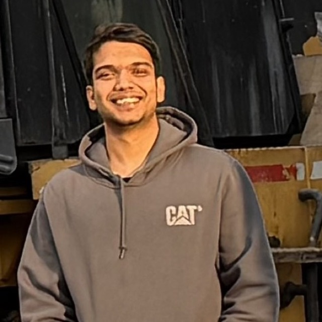
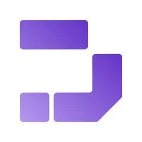

Mohnish Bangaru
Building intelligent systems that scale.
I work at the intersection of Computer Vision, Efficient Deep Learning, and Real-world Impact. Currently optimizing ML pipelines and building autonomous agents.

Experience

Founding Engineer
Drizz (New York, NY)
- Designed and built Fathom, an autonomous computer-use agent that converts natural-language test intents into executable on-device actions across iOS and Android, orchestrated as a stateful LangGraph state machine with planning, tool-use, grounding, and verification nodes.
- Curated 71 agent-tools leveraging map for file access and adding nuanced capability to enable the agent to plan, decide and perform mobile device actions in a sub 4-second step.
- Crafted a Sub-agent System that effectively orchestrates and aligns the agent to the task on long running tasks while managing context windows.
- Developed a comprehensive Agent Evaluation framework that judges the agent on custom metrics of test completion and task adherence, experimenting with over 200 combinations of prompts and tool structures.
Graduate Student Analyst
New York University (New York, NY)
- Enhanced data search-ability using the RoBERTa model, improving accuracy in identifying user problems from text comments by 80%.
- Created and maintained ETL pipelines for University Data Warehouse (5M+ rows), adhering to strict data governance policies and preprocessing malformed data.
- Introduced a set of 15+ Tableau dashboards visualizing key performance indicators to support data-driven decision-making across university departments.
Data Scientist
KPMG (Bangalore, IN)
- Automated reporting workflows using Python scripts, saving 264+ hours annually by extracting financial data from unstructured documents using deep-learning techniques.
- Achieved a data extraction accuracy of 99% using BERT-based models for Named Entity Recognition (NER) on financial documents.
Analyst
- Revamped SQL queries for real-time data access, cutting execution time by 30%.
- Maintained documentation and scripted REST API's serving Forecasting Models deployed on AWS.
Projects
A Low-Resource Parameter-Efficient Fine-Tuning Framework
Built a parameter-efficient fine-tuning technique pairing quantized low-rank adapters with an adapter management system, applied across LLaMa 3.2 1B and 3B, SmolVLM, and the U-Net in Stable Diffusion. Optimizing hybrid residual connections cut training time per epoch by 90% across four models and reduced model size by 25%, while convergence sped up 10x on average and compute costs fell 40%.
Efficient Deep Learning for Edge Deployment
Trimmed ResNet-50 using quantization-aware training and residual connections, reducing model size by 50% and memory by 65%, achieving 10x faster on-device inference.
Medical Expert Question-Answering Model
Fine-tuned a Vision-Language Transformer on 5,000 MIMIC-CXR scans + reports, achieving 96% accuracy in condition identification and expert text generation.
Fine-Tuning LLMs using QLoRA
Fine-tuned Pythia 6.9B and 12B on the Alpaca instruction-tuning data using QLoRA. Explored and documented the effects of distinct LoRA ranks (1, 2, 4, 8, 16), observing that a rank of 8 yielded the lowest test loss by 8%.
Impala Chatbot
Built a customizable chatbot platform that allows consumers to define response logic for different domains or industries.
Voice Automation for YouTube
Developed a Python-based automation tool to control YouTube via voice commands.
Visual COVID Dashboard
Created an interactive dashboard to visualize COVID-19 data trends using R.
Stock Market Prediction
Built a predictive model using S&P 500 market data and time series analysis techniques.
Exoplanet Hunting
Analyzed NASA Kepler telescope time series data to identify exoplanet candidates using signal detection algorithms.
Automated Pothole Detection
Developed a computer vision model to detect potholes from road images, contributing to smart city infrastructure solutions.
Education
Master of Science in Computer Engineering
New York University
B.Tech in Computer Science and Engineering
SRM Institute of Science and Technology